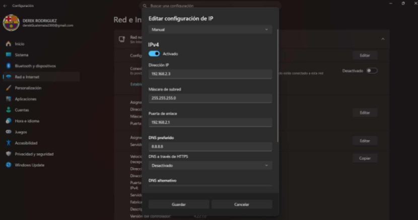

Bueno, para empezar, este proyecto consistía en crear y configurar una red LAN entre tres computadoras utilizando un switch, cables de red y configuraciones manuales de IP. La idea principal era aprender cómo se comunican las computadoras dentro de una red local y cómo compartir archivos entre diferentes equipos sin necesidad de internet. Sinceramente, al inicio parecía algo sencillo porque uno piensa “solo es conectar cables”, pero después nos dimos cuenta de que había bastantes configuraciones y detalles que podían hacer que todo dejara de funcionar si algo estaba mal.
Lo primero que hicimos fue la conexión física de la red. Cada integrante tuvo que conectar su computadora al switch utilizando el cable directo que habíamos fabricado anteriormente. Después tocó revisar las luces LED del switch para confirmar que existiera conexión física entre los equipos. Y sinceramente, cuando las luces empezaron a parpadear sí dio algo de tranquilidad porque al menos significaba que los cables no habían sido fabricados completamente mal.
Luego vino la parte de configurar direcciones IP estáticas en Windows 11. Cada computadora debía tener una IP diferente, pero todas dentro del mismo rango de red 192.168.1.x utilizando una máscara de subred 255.255.255.0. Básicamente era como ponerle dirección y número de casa a cada computadora para que pudieran encontrarse entre ellas dentro del mismo “vecindario”. Y aunque parece fácil escribir números, el miedo de equivocarse en una sola cifra y romper toda la red era bastante real.

Después de configurar las IP tocó hacer pruebas de comunicación utilizando el comando ping desde el CMD. Ahí era donde realmente se comprobaba si las computadoras podían verse entre sí. Y sinceramente, cuando el primer ping respondió correctamente sí se sintió como un pequeño logro técnico, porque hasta ese momento siempre existía la duda de “seguro algo está mal”. Aunque también hubo momentos donde el ping fallaba y tocaba revisar firewalls, cables o configuraciones otra vez.
Otra parte importante fue cambiar el nombre de los equipos y configurar el mismo grupo de trabajo para todas las computadoras. Esto ayudaba a que fuera más fácil encontrarlas y compartir recursos dentro de la red. Básicamente entendimos que si cada computadora estuviera en grupos diferentes sería mucho más complicado comunicarlas correctamente.
Finalmente se realizó la parte más interesante del proyecto: compartir archivos dentro de la red. Para eso tuvimos que habilitar la detección de redes, activar el uso compartido de archivos y crear carpetas públicas con permisos para todos los usuarios. Después hicimos pruebas entrando a las computadoras de nuestros compañeros y dejando archivos de texto dentro de sus carpetas compartidas. Y sinceramente, ver aparecer otras computadoras en la sección de “Red” del explorador de archivos sí se sintió bastante curioso, porque era como crear nuestra propia mini red privada.
Y aunque sí hubo momentos donde el firewall bloqueaba todo, el ping no respondía o las carpetas compartidas simplemente desaparecían por alguna razón misteriosa, creo que este proyecto sí ayudó bastante a entender cómo funcionan las redes locales y cómo las computadoras realmente logran comunicarse entre sí.